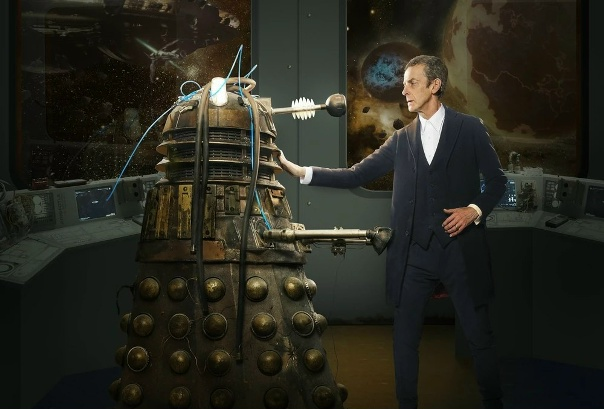

Эра Двенадцатого Доктора (8 сезон)
<<< НАЗАД ||| 2. Внутрь далека ||| ДАЛЬШЕ >>>
MVO [TVShows], [Кириллица], [Baibako], [ВГТРК], [Jaskier] или Original [ENG]
Субтитры: Русские {TrueTransLate} или Английские
 | Весь 8-й сезон (12 серий) |
Inside the Dalek
Дата выхода: 30 августа 2014
Формат: 45-минутный эпизод
| Варианты озвучек: | * Разные: смотрите по инструкции |
|---|---|
| Скачивание и просмотр: |
Флот далеков окружает одинокий мятежный корабль, единственная надежда которого - Доктор. Встретившись лицом к лицу со своим злейшим врагом, он понимает, что нуждается в помощи Клары. Хороший ли Доктор человек? В поисках ответа на этот вопрос Повелитель Времени, его верная спутница и группа солдат отправляются вовнутрь ключа ко спасению - единственного хорошего далека...


Трейлер:
https://youtu.be/htZ22_L4t-w